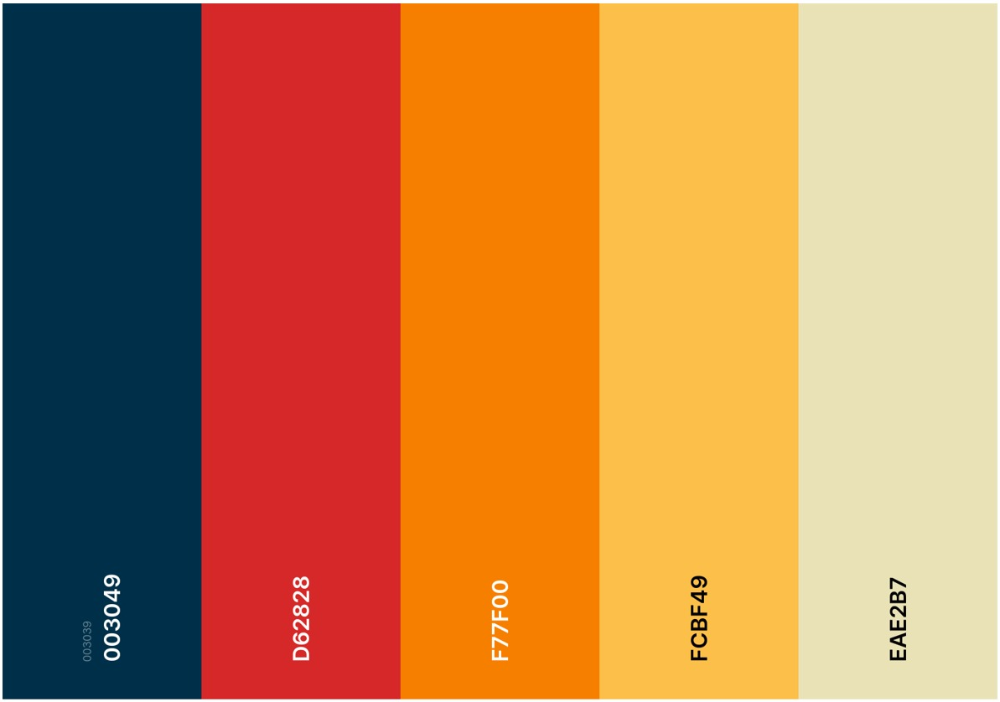
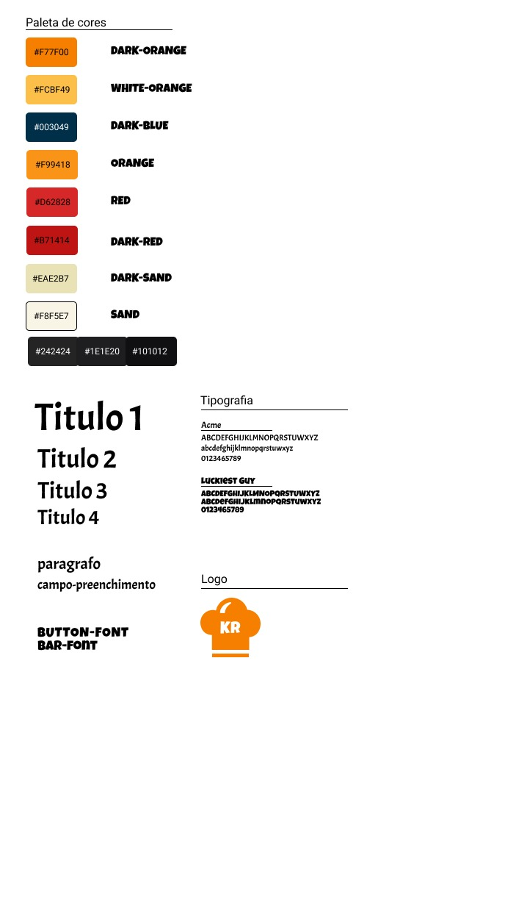

Style Guide
Histórico de Versão
| Data | Versão | Descrição | Autor(es) |
|---|---|---|---|
| 26/09/2021 | 1.0 | Abertura do Documento | Davi Matheus |
| 27/09/2021 | 1.1 | Criação da Paleta de Cores e Fontes | Élias Yousef |
| 30/09/2021 | 2.0 | Criação da Logo | Natanel Filho |
1. Introdução
Este documento trata acerca do guia de estilo e manual de identidade visual do projeto Kitchen Road.
2. Logo
3. Detalhamento e Justificativas
3.1 Nome da Aplicação
Para o nome da aplicação foi traduzido a palavra "cozinha" para o inglês "kitchen" e escolhido a palavra "road" que traduzindo para o português "estrada",juntamos essas duas palavras porque possui uma ideia de uma "Jornada na conzinha" ou um caminho para se tornar um bom chef.
3.2 Fontes
As fontes utilizadas na aplicação são:
- Luckiest Guy: para títulos.
- Acme: para corpo do texto.
Para o html reconhecer a fonte, coloca-se no
da seguinte forma:<link href="https://fonts.googleapis.com/css?family=LuckiestGuy|Acme&display=swap" rel="stylesheet">
Para o css:
$font-family: "Acme";
$font-family: "Luckiest Guy";
3.3 Paleta de Cores

5. Componentes
